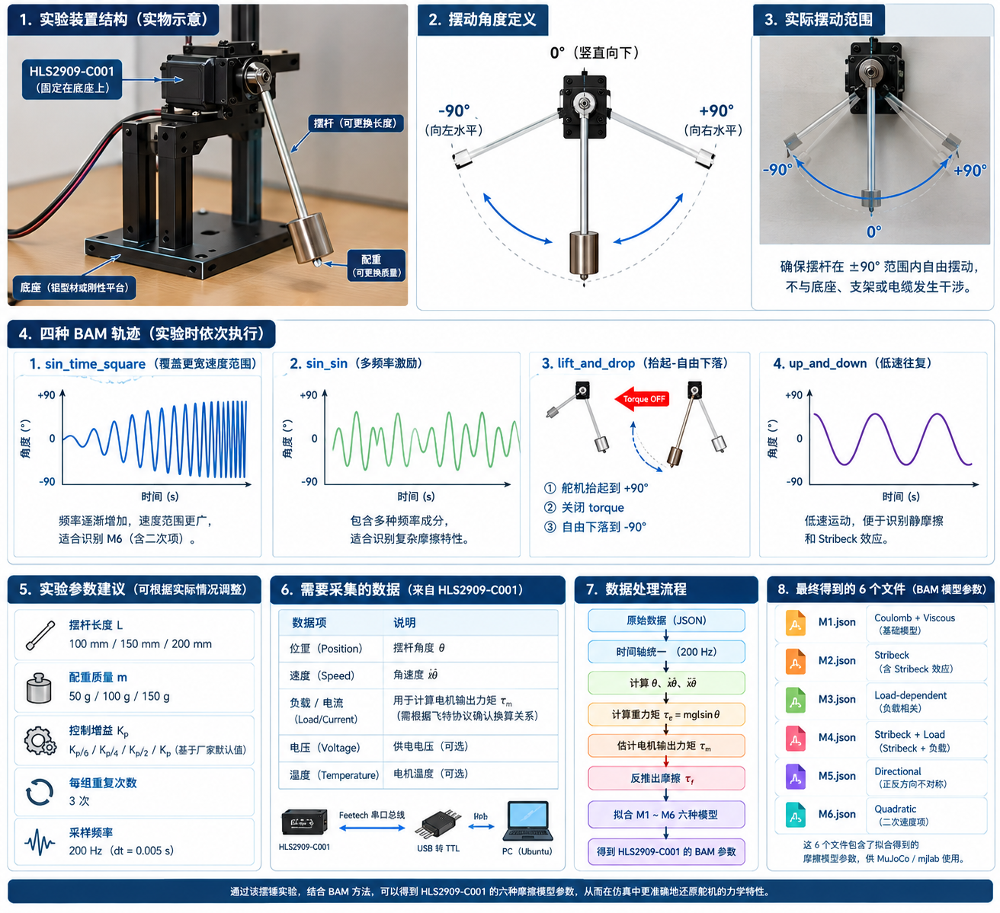
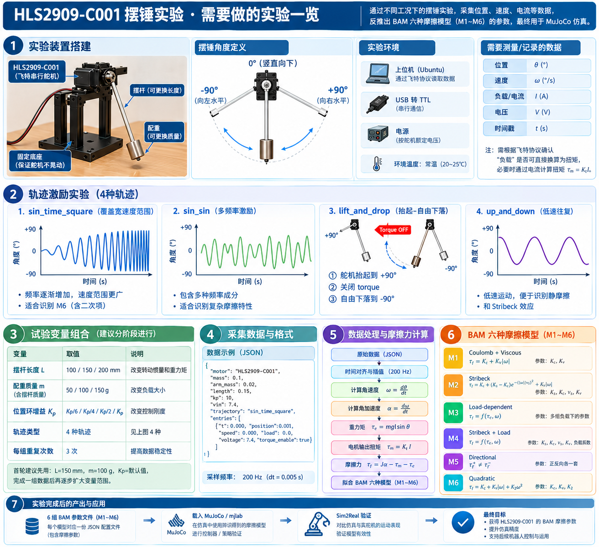

📄 完整实验设计文档(步骤/变量控制/采集参数/决策规则) · 本页为速查
用途: 用单独一只 HL-2909 + 摆臂 + 砝码的摆锤台架, 标定全套动力学 (kt / R / armature / error_gain / 摩擦 m1→m6)。机械结构由机械工程师重新设计 (本页只给"软件需要的最小几何约束"); 软件与测试取值按本页执行。
下面两张图用来看懂台架、摆角和四种轨迹。图内个别示例数字不是本次最终参数；实际操作以本手册后面的“本次唯一参数表”和命令为准。


| # | 约束 | 原因(软件依赖) |
|---|---|---|
| 1 | 输出轴水平, 摆臂在竖直平面内 ±90° 自由摆动(无碰撞) | 重力矩 B(θ) 需要 sin θ 形式 |
| 2 | 轴心距地面/桌面 ≥ 臂长 + 50mm(如臂 200 → 轴高 ≥ 250) | 摆臂不穿地 |
| 3 | 轴心→端部砝码质心 L 可实测(卡尺 ±1mm); 全部移动件可拆下称重 | m_tip/m_arm/m_hub/L 是配方输入 |
| 4 | 台架固定牢靠(重/压胶垫), 振动 < 1°(摆动时不摇晃) | 数据干净; 固定不良整条作废 |
| 5 | 舵机总线只接这一只(建议 ID=1; 鸭子总线断开) | 避免误写鸭子上的舵机 |
| 类别 | 物料与建议规格 | 数量 | 验收要点 |
|---|---|---|---|
| 被测件 | HL-2909-C001 + 匹配花键的金属舵盘 | 1 套 | 优先用原厂配套舵盘，不要猜花键齿数 |
| 骨架 | 2040 铝型材约 300 mm + 180×120×8 mm 铝底板 + 角码 | 各 1 | 轴心高 250–280 mm；比打印立柱更稳 |
| 台架固定 | C 型桌夹，开口≥40 mm | 2 | 底板两侧各一，不能只靠自重 |
| 摆臂 | Φ6 mm 碳纤管/铝管，约 220 mm | 1 | 最终 L 按轴心到端部总质量质心实测 |
| 连接件 | 舵盘-杆夹、舵机夹座、端部砝码托 | 各 1 | cad/pendulum_bench/ 作参考；打印用 PETG/尼龙，不建议 PLA |
| 负载 | 钢垫片/小砝码，含托盘后端部总质量 50/100/150 g | 3 档 | 每档整套称重 0.1 g，可不等于名义值 |
| 紧固 | M3/M4 螺栓、M6 螺杆、M6 尼龙锁紧螺母、平垫、螺纹胶 | 1 批 | 砝码必须机械防松，禁止只用胶粘 |
| 供电 | 12 V 稳压电源≥3 A、3 A 保险丝、串联急停开关 | 各 1 | 初始 12.0 V；急停直接切断 12 V |
| 通信 | 支持 FT-SCS 半双工的 USB-TTL 转接板和线束 | 1 | 1 Mbps；电源、TTL、舵机必须共地 |
| 测量 | 0.1 g 电子秤、0.01 mm 数显卡尺、小水平仪 | 各 1 | 质量记到 0.1 g，L 记到 1 mm |
| 防护 | 3 mm 透明 PC 挡板约 400×400 mm + 护目镜 | 各 1 | 挡板放在摆动平面和操作者之间 |
| 量 | 建议值 | 精度 | 备注 |
|---|---|---|---|
| 摆长 L(轴→砝码质心) | 0.150 m | ±1 mm | 砝码厚度中心算质心 |
| m_arm 摆杆(碳纤 Ø6) | ≈12–25 g(越轻越好) | 0.1 g | 均匀细杆假设 |
| m_hub(舵机臂+夹头+螺丝) | ≈15–30 g | 0.1 g | r_hub 由臂孔位定(≈8–15 mm) |
| r_hub(轴→臂质心) | ≈0.01 m | ±2 mm | 可直接取臂孔半径附近 |
| m_tip 三档 | 50 / 100 / 150 g | 0.1 g | 托盘+砝码+夹紧件一起称 |
| 项 | 取值 | 理由 |
|---|---|---|
| 轨迹(每条 6 s) | sin_time_square / sin_sin / lift_and_drop / up_and_down | 背驱+Stribeck / 全速度谱 / 低速+负载 |
| 砝码档 × 轨迹 × 重复 | 3 × 4 × 3 = 36 条 | 噪声平均; 多档才有负载相关项 |
| 采样率 | 目标 ~6 ms/拍(实际以时间戳为准, 期望 6–15 ms) | 固件 DTs=3ms; 总线极限 |
| 速度 | 位置差分(相邻拍), 不用 reg58 | 58 号量化 0.077 rad/s 太粗 |
| 固件参数 | Mode=0, Kp=32, Kd=32, Ki=0; reg41=0(最大加速度) | 2026-09-07 对 15 只舵机实测；台架舵机开始前仍需回读 |
| 临时限流 | 0.975 A(reg44=150；结束恢复开始前读到的值) | 防堵转发热；实测出厂保护值为 1.95 A |
| 零位 | 扭矩关, 杆自然下垂, 30 读中位(q_zero, 脚本自动) | pendulum 帧原点 |
| 项 | 取值 | 说明 |
|---|---|---|
| 模型档 | M1-M6 六个候选模型 | 同一批数据做 6 次软件拟合，不是额外硬件实验 |
| 拟合参数 | kt / R / armature / q_offset / friction_* / error_gain / kd / 限幅(出厂值固定) | 用 m1.json 现值作初值即可 |
| 验收门 | 独立验证 MAE < 0.157 rad | 每个“轨迹×质量”的第 3 次不参与拟合，仅用于验证 |
| 落地 | mN.json → vendor/bam/params/hls2909/ + constants(需你点头)→ 冒烟 → 长训 | — |
m_arm：仅摆杆，不含舵盘和端部托。m_hub：舵盘、杆夹和近轴紧固件；测质心半径 r_hub。m_tip：托盘、砝码、杆端夹和紧固件全部计入。L：输出轴中心到端部总质量质心，不是杆的切割长度。断开 12 V 后接线：+12 V 经 3 A 保险丝和急停接舵机；电源 GND、USB-TTL GND、舵机 GND 共地；TTL DATA 接半双工信号线。线色不能凭经验猜，按针脚表逐根核对。
# ① 准备: 扫描/改ID/确认位置模式(只读+写ID+模式, 不动扭矩) /usr/bin/python3 scripts/setup_bench_servo.py --port /dev/ttyACM0 --find-id 23 --set-id 1 # ② C关: 50g 试录 1 条(下面数字是格式示例，必须换成实测值) /usr/bin/python3 scripts/record_pendulum_bench.py --port /dev/ttyACM0 --id 1 \ --tip-mass 0.05 --arm-mass 0.018 --arm-length 0.15 --hub-mass 0.020 --hub-radius 0.010 \ --trajectory up_and_down --reps 1 --out hls2909_calibration/pilot # ③ D关: 正式 36 条(约 40-60 min) /usr/bin/python3 scripts/record_pendulum_bench.py --port /dev/ttyACM0 --id 1 \ --tip-mass 0.05 --tip-mass 0.10 --tip-mass 0.15 \ --arm-mass 0.018 --arm-length 0.15 --hub-mass 0.020 --hub-radius 0.010 \ --trajectory sin_time_square --trajectory sin_sin --trajectory lift_and_drop --trajectory up_and_down \ --reps 3 --limit-a 0.975 --torque-budget 0.35 --out hls2909_calibration/bench # ④ E关: 拟合 + 独立验证(每组第 3 条留出) .venv/bin/python scripts/fit_leg_pendulum.py --logdir hls2909_calibration/bench \ --actuator hls2909 --models m1 m2 m3 m4 m5 m6 --trials 20000 --out hls2909_calibration/fit
| 序号 | 端部总质量 | 做什么 | 条数 |
|---|---|---|---|
| 0（试跑） | 50 g | up_and_down 跑 1 次，只检查方向、零位、碰撞和急停 | 1 |
| 1 | 50 g | 4 种轨迹，每种 3 次 | 12 |
| 2 | 100 g | 4 种轨迹，每种 3 次 | 12 |
| 3 | 150 g | 4 种轨迹，每种 3 次 | 12 |
| 合计：1 条试跑 + 36 条正式数据 | 37 | ||
每档质量中的 4 种轨迹固定为：① sin_time_square 速度扫频；② sin_sin 多频复合；③ lift_and_drop 抬起后断扭矩自由落体；④ up_and_down 低速往返。
START 才会继续。| 轨迹 | 脚本动作 | 你需要做/观察的事 |
|---|---|---|
sin_time_square速度扫频 |
扭矩保持开启。摆杆绕垂直向下零位做正弦扫频：θ = sin(t²)，幅值恒定 ±1 rad（≈±57°）， 频率从 0 平滑升到约 5.7 Hz，6 s 一路从慢到快往复。这是"一次跑完全速度谱"的主推荐激励，用于背驱/Stribeck/全速度段辨识。 | 站在侧面（摆动平面外）；观察是否撞限位、失步、杆夹滑动——不要用手扶。 杆最大摆到 ~±57°（在水平以内），注意杆/砝码与台架边缘、线束保持间隙。 |
sin_sin多频复合 |
扭矩保持开启。复合摆动 θ = sin(t)·(π/2) + sin(5t)·0.5·sin(2t)： 主摆 ±90°（到水平）叠加 3~4 倍频的小幅调制（快慢叠加：一个宽带慢摆 + 一个窄带快振）。用于激励谐波/共振/齿轮非线性。 | 听是否有齿轮卡顿/异响（轻微但高频，靠近听）；检查台架不能跟着晃、夹头不滑。 单次最大摆幅 ~±90°，可能到水平，摆杆扫过平面 清空此方向。 |
lift_and_drop抬升→自由落体 |
前 2 s 用三次样条把杆从下垂(0°)抬到 -90°（对侧水平），在 2 s 时刻自动断扭矩，让杆自由落体摆回并自然衰减。用于背驱（断扭矩）与摩擦/Stribeck 辨识。 | 这条最需要清空摆动区——杆会大幅摆回并来回衰减几秒。人站侧面，别在摆动平面。 确认断扭矩后杆能自由摆，不被线束拉住；观察自由衰减是否平滑、有无卡阻。 |
up_and_down低速往返 |
扭矩保持开启，慢速（共 6 s）：从下垂 0° 缓升到 +90°（水平），3 s 后缓降到 +72° 并保持到结束。用于低速爬行/静摩擦与负载相关摩擦辨识。 | 盯低速段（启动 ~0° 附近与 72° 停止时）：是否有爬行/抖动/台阶、是否停得干脆。 观察杆是否匀滑慢动还是一顿一顿——后者的量就是静摩擦。 |
零位与摆幅速查（θ 约定）：θ = 0 = 摆杆垂直向下（静平衡，脚本自动找 q_zero）；+90°（+π/2）与 -90° 分别是从下垂抬到两侧水平。 所有工况都从下垂零位开始、结束后回到零位再等 0.5 s。摆幅速查：sin_time_square ≈±57°；sin_sin ≈±90°（叠高频）；lift_and_drop → -90°；up_and_down → 0°…+90°…+72°。
每条结束后：脚本会把目标回到零位并等待 0.5 s。如果看到松动、碰撞、异响、线束拉扯，立即按急停，当条数据作废，修复后重新采集整组 3 次。
arm_mass=0,
与 bam 内部零耦合 —— 不改 vendor 代码;rollout_log: dt/kp/vin/mass/arm_mass/length +
entries[{position, speed, goal_position, torque_enable}], speed 用差分;| 关卡 | 通过标准 |
|---|---|
| B 只读 | 只发现 1 只舵机；11.5–12.6 V；温度<45°C；Mode=0；无错误状态 |
| C 试跑 | 正角方向正确；0 rad=自然下垂；无滑动；>50 样本；温升<5°C；采样中位周期建议≤20 ms |
| D 采集 | manifest.json 中 records=36；每条>50点；没有安全中止；电压/采样周期无明显漂移 |
| E 拟合 | 12 条留出数据验证 MAE<0.157 rad；训练/验证无明显分叉；同等通过时选 m1 |
| 文件 | 作用 |
|---|---|
scripts/setup_bench_servo.py | 步骤①: 扫描/改ID/确认位置模式 |
scripts/record_pendulum_bench.py | 步骤②③: 自动记录(安全内置) |
scripts/fit_leg_pendulum.py | 步骤④: bam.fit 包装 + MAE 选档 |
cad/pendulum_bench/*.scad | 参考打印件(工程师可重设计) |
scripts/make_pendulum_bench_runbook_html.py | 本手册生成器 |
docs/pendulum_bench_runbook.html | 本文件 |
hls2909_calibration/bench/ | 36 条原始 JSON + manifest，不要手工改数据 |
hls2909_calibration/fit/ | fit_m1.json / fit_m6.json / mae_report.md |